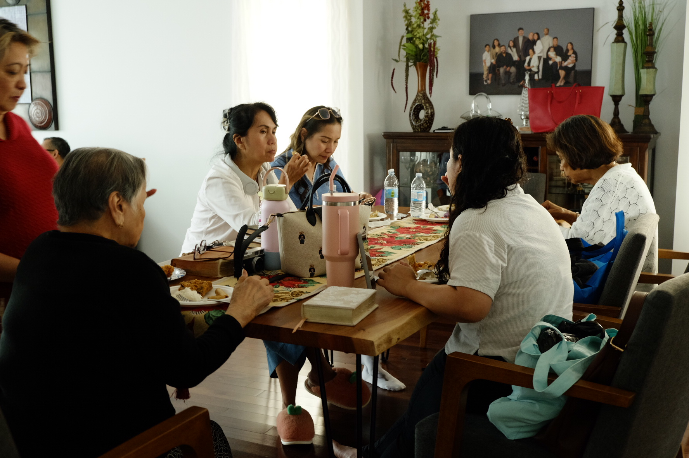

Who we are
Who Faith Life is and what we believe.
Looking for a church home? Growth Track is our membership path: five sessions on who we are, what we believe, and how you can belong and serve at Faith Life.
Sign up for Growth Track
Growth Track is our church membership course.
Together we go through our mission, our vision, our beliefs, and what it means to be a member of Faith Life. All we ask is your time and your commitment.
We offer it twice a year: in late January, and in May before summer.
Each session builds on the one before.
Who Faith Life is and what we believe.
What the gospel is, and how we can share it.
What baptism means, for those who want to be baptized after the class.
How God has gifted you. A spiritual gifts assessment and an introduction to our ministries.
The covenant and commitments of a member of Faith Life.
No. Membership is voluntary. If you would like to lead in worship, serve in a ministry, or take on another leadership role, Growth Track and membership are the way in.
Membership is more than a name on paper. Growth Track makes sure you know what we believe, what we are about, and what your commitments are as a member, so that membership is something you live out.
If you have accepted Jesus Christ as your Lord and Savior and would like to be baptized, Growth Track is where to start. Session three covers baptism. Afterwards, our elders meet with you, and baptisms take place in the summer.
You become a member of Faith Life. You will know what we believe, what your commitments are, and where your gifts fit in our ministries.
Let us know you’re interested and we’ll save you a spot in the next Growth Track.